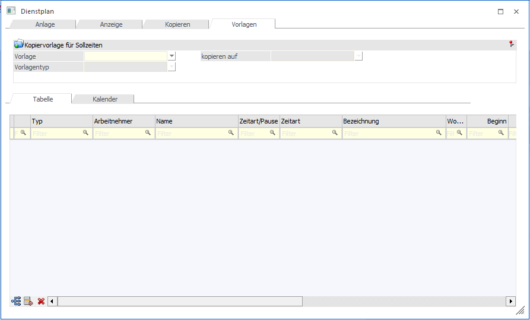
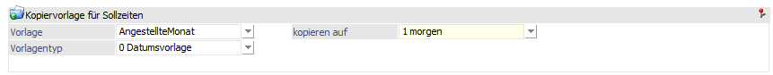
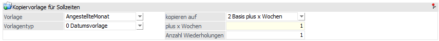
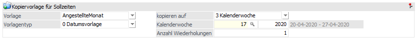
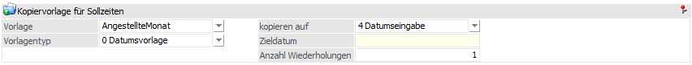
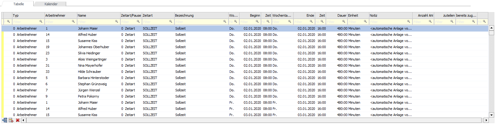
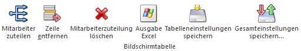
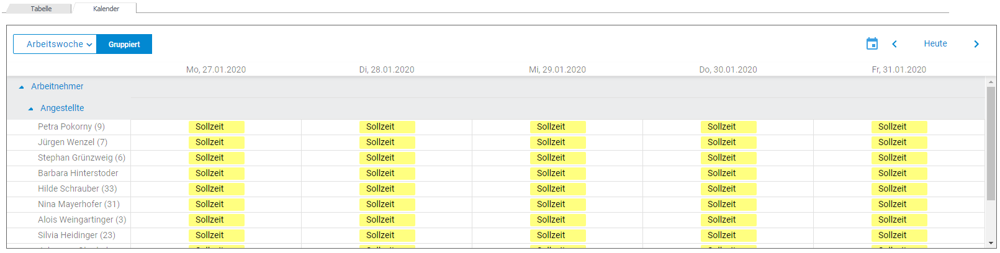
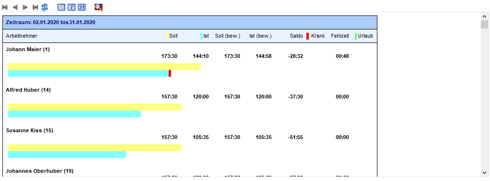

Im Register "Vorlagen" können ebenfalls Vorlagen für das Kopieren von Dienstplänen bzw. Sollzeiten angelegt und bearbeitet werden.

Kopiervorlage für Sollzeiten
Ø Vorlage
Eingabe einer Bezeichnung für die Vorlage bei Neuanlage. Über eine Auswahllistbox können die bereits angelegten Vorlagen ausgewählt werden.
Ø Vorlagentyp
Auswahl des Vorlagentyps.
ü Datumsvorlage
Mit diesem
Vorlagentyp werden wie bisher die Datümer eingegeben
ü Wochenvorlage
Mit diesem
Vorlagentyp werden nur die Wochentage eingegeben.
Achtung
Wenn z.B.: "MO" mehrmals eingegeben wird, wird damit immer derselbe Tag, nicht aber der Montag der nächsten Woche verwendet.
ü Tagesvorlage
Mit diesem
Vorlagentyp können die Tage (1-n) eingegeben werden.
Hinweis
Bei Wochen- und Tagesvorlagen steht die Kopieroption "2 Basis plus x Wochen" nicht zur Verfügung.
Ø kopieren auf
Auswahl des Zeitraumtyps. Dabei stehen folgende Optionen zur Verfügung:
ü 1 morgen
Mit dieser Option wird
das kleinste Datum der angezeigten Zeilen auf das morgige Datum kopiert und alle
anderen Datümer der Vorlage werden entsprechend angepasst.

ü 2 Basis plus x Wochen
Mit
dieser Option werden alle angezeigten Zeilen um die Anzahl der Wochen geändert,
die Wochentage bleiben damit gleich.

ü 3 Kalenderwoche
Mit dieser
Option werden die Zeilen auf die eingegebene Kalenderwoche geändert bzw. kopiert
und die Wochentage bleiben gleich.

ü 4 Datumseingabe
Mit dieser
Option wird das kleinste Datum der angezeigten Zeilen auf das eingegebene Datum
kopiert, alle anderen Datümer der Vorlage werden entsprechend angepasst.

Hinweis
In einer Vorlage ist z.B.: der Zeitraum für eine Woche oder einem Monat hinterlegt. Wird diese Vorlage mit dem Zeitraum "1 morgen" oder "4 Datumseingabe" kopiert, kann es sein, dass am Wochenenden SA und SO Sollzeiten angelegt werden. Definiert ist, aber dass nur von MO bis FR gearbeitet wird bzw. dass dies die Arbeitstage sind. So eine entsprechende Meldung ausgegeben, ob auch die Sollzeiten angelegt werden sollen, die laut dem Arbeitszeitmodell keine Arbeitstage sind. Wird die Meldung mit JA bestätigt, werden die Sollzeiten für SA und SO angelegt. Bei NEIN werden nur die Arbeitstage angelegt.
Tabellenansicht

Ø Typ
Über eine Auswahllistbox kann entweder ein Arbeitnehmer bzw. Mitarbeiter oder eine Arbeitnehmergruppe ausgewählt werden.
Ø Arbeitnehmer/Arbeitnehmergruppe
Auswahl des Arbeitnehmers bzw. Mitarbeiters oder der Arbeitnehmergruppe. Dazu steht der Matchcode oder die Autovervollständigung zur Verfügung.
Ø Name
Anzeige des Namens des Arbeitnehmers bzw. Mitarbeiters oder der Arbeitnehmergruppe. Diese Spalte ist nicht editierbar.
Ø Zeitart/Pause
Auswahl bzw. Anzeige um welche Zeitart es sich handelt, dabei stehen in der Auswahllistbox "0 Zeitart" und "1 Pause" zur Verfügung.
Ø Zeitart
Je nachdem, ob eine Zeitart oder eine Pause ausgewählt worden ist, kann in diesem Feld entweder Zeitarten aus dem Zeitartenstamm oder Pausen aus dem Pausenstamm ausgewählt werden. Dabei steht der Matchcode zur Verfügung.
Ø Bezeichnung
Die Bezeichnung wird aus der jeweiligen Zeitart bzw. Pause herangezogen. Das Feld ist nicht editierbar.
Ø Wochentag von
Anhand des Beginn-Datums wird der Wochentag automatisch eingetragen. Das Feld ist nicht editierbar.
Ø Beginn
Eingabe des Beginn-Datums für die Zeitart.
Ø Zeit
Eingabe der Beginn-Uhrzeit für die Zeitart.
Ø Wochentag bis
Anhand des End-Datums wird der Wochentag automatisch eingetragen. Das Feld ist nicht editierbar.
Ø Ende
Eingabe des End-Datums der Zeitart.
Ø Zeit
Eingabe der End-Uhrzeit für die Zeitart.
Ø Dauer
Die Dauer wird anhand der Beginn- und End-Uhrzeit automatisch gerechnet. Das Feld ist nicht editierbar.
Ø Einheit
Anzeige der Einheit aus der Zeitart.
Ø Notiz
Erfassung einer Notiz pro Zeileneingabe.
Ø Anzahl AN
Anzeige der Anzahl der Arbeitnehmer bzw. Mitarbeiter, die bei der ausgewählten Arbeitnehmergruppe hinterlegt sind. Dieses Feld ist nur dann befüllt, wenn es sich um eine Arbeitnehmergruppenzeile handelt.
Ø zuteilen
Eingabe der Anzahl wie viele Arbeitnehmer bzw. Mitarbeiter zugeteilt werden sollen.
Ø bereits zugeteilt
Anzeige der Anzahl wie viele Mitarbeiter bereits zugeteilt sind.
Hinweis
Wenn nicht alle benötigten Arbeitnehmer bzw. Mitarbeiter
eingefügt werden können, wird ein blaues Info-Icon  angezeigt. Mit Doppelklick wird eine
Liste geöffnet, in der anzeigt wird, welche Arbeitnehmer bzw. Mitarbeiter nicht
verfügbar sind.
angezeigt. Mit Doppelklick wird eine
Liste geöffnet, in der anzeigt wird, welche Arbeitnehmer bzw. Mitarbeiter nicht
verfügbar sind.
Tabellenbuttons

Ø Mitarbeiter zuteilen
Mittels den "Mitarbeiter zuteilen"- Button kann eine automatische Zuteilung auf die Mitarbeiter erfolgen, wenn Arbeitnehmergruppen vorhanden sind, für die es noch keine Arbeitnehmer- bzw. Mitarbeiterzeilen gibt. Dabei werden alle Arbeitnehmer bzw. Mitarbeiter der betroffenen Arbeitnehmergruppe geprüft, ob es an den angegebenen Tagen bereits Soll- oder Fehlzeiten gibt. Wenn das nicht der Fall ist, wird die entsprechende Arbeitnehmer bzw. Mitarbeiterzeile eingefügt.
Hinweis
Wenn eine Arbeitnehmergruppe nicht vollständig aufgeteilt ist, wird der Gruppenname in rot dargestellt.
Achtung
Wenn Arbeitnehmergruppenzeilen aufgeteilt sind, können die Arbeitnehmergruppe und die Datümer nicht mehr geändert werden.
Ø Zeile entfernen
Mit diesem Button kann die markierte Zeile entfernt werden.
Ø Mitarbeiterzuteilung löschen
Nach einer Abfrage können die zugeteilten Mitarbeiter wieder entfernt werden, solange die Zuteilung nicht gespeichert worden ist.
Ø Ausgabe Excel
Der Inhalt der Tabellenansicht kann in eine Excel-Tabelle ausgegeben werden.
Ø Tabelleneinstellungen speichern
Die Spalten einer Tabelle können grundsätzlich an beliebige Positionen verschoben, bzw. in der Breite entsprechend angepasst werden. Durch Anwahl des Buttons "Tabelleneinstellungen speichern" werden die Einstellungen benutzerspezifisch gespeichert und bei dem nächsten Aufruf des Programmpunktes wieder vorgeschlagen.
Ø Gesamteinstellungen speichern
Im Gegensatz zu "Tabelleneinstellungen speichern" können mit "Gesamteinstellungen speichern" mehrere Tabellenaufbauten gespeichert und nach Wunsch geladen werden. Zusätzlich werden Sonderfunktionen der Tabelle (z.B. "Spalte gruppieren") ebenfalls bei der Speicherung bedacht.
Kalenderansicht
Anzeige der zu kopierenden Einträge.

Buttons
Ø Ok
Mit dem OK-Button werden neue und geänderte Vorlagen gespeichert.
Ø Ende
Mit dem Ende - Button wird wieder die Tabellen- bzw. Kalenderansicht wiederhergestellt.
Ø Sollzeit
Beim Drücken des Sollzeit-Buttons werden die Sollzeiten für den ausgewählten Zeitraum angezeigt. Der Button wird benutzerspezifisch gespeichert.
Ø Fehlzeit
Beim Drücken des Fehlzeiten-Buttons werden die Fehlzeiten angezeigt. Der Button wird benutzerspezifisch gespeichert.
Ø Vorlage speichern
Der Button steht nur im Register "Anzeige" zur Verfügung.
Ø Vorlage löschen
Der Button können Vorlagen entfernt werden.
Ø OIF anzeigen
Wenn der Button aktiviert ist, wird für alle in der Tabellenansicht vorhanden Arbeitnehmer bzw. Mitarbeiter eine Gesamtsumme für Ist, Soll, Fehlzeit und Urlaub angezeigt. Das OIF wird beim Entfernen von Zeilen, beim Kopieren auf einen anderen Zeitraum, beim Editieren und beim Verschieben von Zeilen bzw. Einträgen im Kalender aktualisiert. Der Button wird benutzerspezifisch gespeichert.
